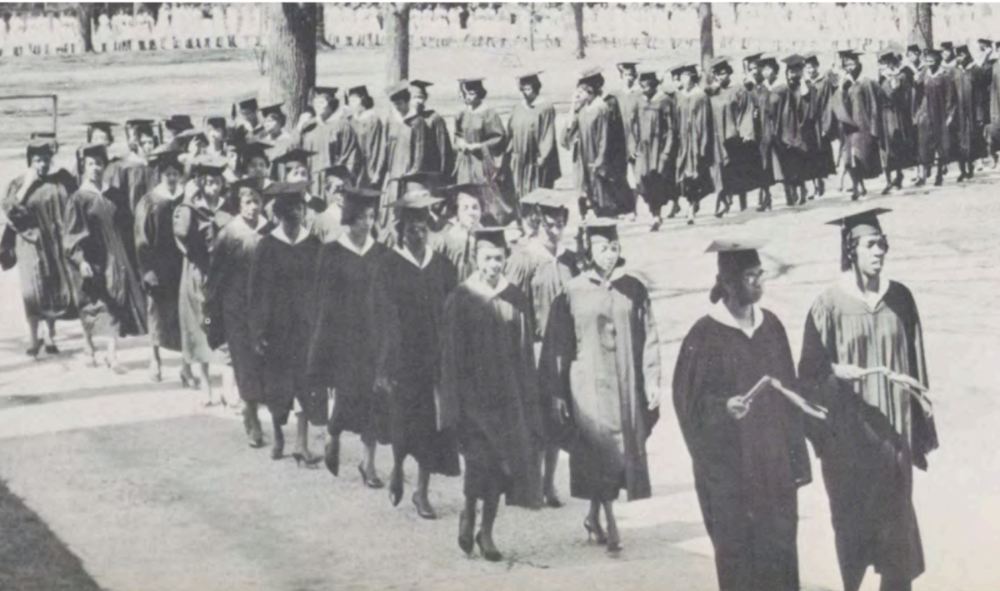

History
Spelman College’s Commencement Weekend is deeply rooted in tradition and academic excellence. For generations, this event has honored the perseverance and success of Black women scholars and their transformative impact across the world. From its early days on campus, Commencement has stood as a unifying milestone for students, faculty, family, and community.

The celebration has grown to include iconic traditions like the March Through the Alumnae Arch and the ringing of the historic campus bell. These rituals are more than symbolic—they are a reaffirmation of Spelman’s mission to uplift, empower, and launch the next generation of changemakers into a global society.